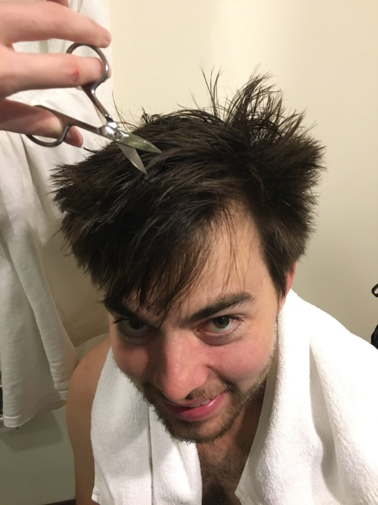

Dopo sole 3h e mezza di bus siamo arrivati in quel di Chiang Rai, ancora più a nord della Thailandia, che ci ha accolto con ben 12°C (il giorno prima era sceso sotto i 10°C!). Sebbene non fosse un clima rigido come quello svizzero attuale, non eravamo preparati ad affrontarlo con solo qualche magliettina, un giacchetto (peraltro inutilizzabile talmente sporco, quindi dato in lavanderia) e in un hotel sgrencio senza acqua calda. D’altronde nemmeno i thailandesi si aspettavano questo calo di temperature che è durato per una settimana..
Dopo qualche giorno di assestamento però siamo riusciti a goderci quello che ha da offrire Chiang Rai e i suoi dintorni!
Abbiamo noleggiato uno scooter e siamo andati a vedere una pagoda e la Statua del grande Buddha (wat huay plakang), davvero maestosa! Un anziano signore sorridente (probabilmente il custode della zona) ci ha fermato e ha cercato di comunicare, ma per 5 min abbiamo annuito non capendo niente tranne che aveva un amico che vive a Zurigo (inizialmente avevamo paura che ci avesse fermato perch√© a me per sbaglio √® rimasto attaccato sotto le unghie un foglietto di oro appartenente ad una scultura che avevo appena toccato ahah). Poi √® stato il turno di un poliziotto che sembrava sotto effetto di acidi, il quale si √® avvicinato al baretto in cui stavamo bevendo qualcosa e ci ha detto: ‚Äúdo you hear me? I hear you!‚Äù (Cit. x10) e tra una risata e l‚Äôaltra abbiamo sostenuto un secondo discorso improbabile tanto quanto insensato üôÇ
Ci siamo accorti della grande volontà di tutti i cittadini sud-est asiatici di parlare in continuazione, sebbene non sappiano una sola parola di inglese. L’altro giorno, per esempio, dovevamo prendere un tuk tuk dall’hotel alla stazione dei bus: abbiamo iniziato con il formulare una frase in inglese, ma ovviamente incompresi siamo passati ai gesti, poi a Google translate in lingua Khmer al quale il conducente ha risposto: ah yes yes yes! E ci fa segno di salire. Yes sto cazz… Dopo 5 min ci accorgiamo che sta andando tutta da un’altra parte e cosi iniziamo a gesticolare indicando le strade da prendere.. ma nemmeno il segnare con la mano la direzione sinistra fa capire al nostro caro amico dove andare, il quale decide infatti di curvare a destra. Insomma, è un circo.
Tornando alla prima giornata trascorsa a Chiang Rai, abbiamo poi deciso di andare alle sorgenti calde (il nome sembrava figo) le quali si sono rivelate essere ahim√® 2 fontanelle üòâ per√≤ il viaggio off road dal primo al secondo sito √® stato fuori di testa.. immersi nel nulla, cercando di far funzionare Google maps, abbiamo preso ‚Äústrade‚Äù dimenticate da anima viva e ci siamo imbattuti in un‚Äôimpressionante discarica all‚Äôaperto (la foto non mostra le reali dimensioni). Per quanto riguarda l‚Äôargomento immondizia&rifiuti si prega di attendere uno dei prossimi capitoli riguardanti la Cambogia, che √® messa proprio male..
Tempo fu di tagliare i capelli al nostro baldo giovine: “devo tagliarmi i capelli ma non mi fido dei thailandesi.. se non ci capiamo poi mi rasano a zero.. tagliameli tu pf“. Mix improvvisato di forbicina per unghie e rasoio, non è stato così tragico per finire..
La sera siamo andati in un bellissimo bar di gatti (ci eravamo già stati a Chiang Mai, ma ci è piaciuto troppo, così ci siamo andati anche qui. Dovrebbero aprirlo anche a Lugano!). Abbiamo prenotato la prossima destinazione in Cambogia (inizialmente volevamo spostarci in Laos, ma scappiamo dal freddo) sorseggiando uno smoothie in compagnia di tanti dolci gimbilimbi (come direbbe la mia jessichina).
Per cena siamo andati dal nostro amico Antooonio (a dire il vero non sappiamo il suo nome, ma essendo un pizzaiolo, per antonomasia si deve chiamare così) a mangiarci una bella pizza perché, in tutta onestà, di pollo al curry ultra piccante & sticky rice nelle prime settimane ne abbiamo mangiato a sufficienza! Di cucina italiana/europea se ne trova abbastanza ovunque, quindi non è difficile staccare dalla cucina asiatica. La cosa più fastidiosa per quanto mi riguarda è il piccante (hai ragione Tanya!!): anche se sul menu c’è scritto esplicitamente “not spicy” in realtà, qualsiasi pietanza sia, è piccantissima (talvolta immangiabile perfino per Carlo che lo sopporta bene).
Comment Section